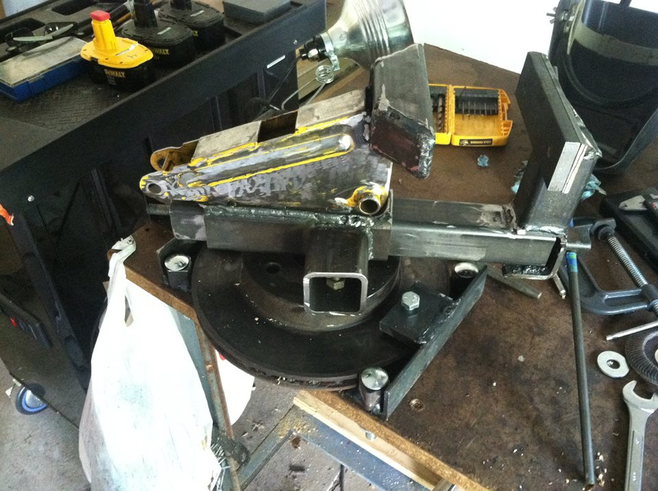

I am a Graphic Designer originally from the Detroit metro area. I hold two associates degrees from Oakland Community College, in Graphic Design and Liberal Arts, and a Bachelor of Fine Arts from Michigan State University.
I currently live on a farm in Vicksburg, with my wife, son, dog, and tractor. It's not really a farm, but it does have a pole barn.
In as much of my free time as I am able to smuggle away, I like to fire up an old Lincoln Electric welder and melt steel. Some of my projects have even proved useful (I made a bench vise out of a non-working hydralic jack and a Jeep brake rotor). I've also been accused of making art. There's been a time or two where I intended to do so.
I also like to wrench on cars. One of these days, I'm going to cram too large an engine somewhere it rightly does not belong. In the mean time, I mostly just tinker around the edges. I'm getting pretty good a brake and fuel lines.
Tinkering with a carburator used to be a national passtime. I'm sometimes jealous I missed that.
Having a decent respect for a quality tool, and a healthy aversion to the price tag that comes with a decent "family heirloom" quality bench vice, I approached my need for one in a non-traditional fashion. When it came time for a new one, I hit the steel yard and scrounged through some scrap metal (in this case, the beefy body of a broken 1 ton floor jack). The SAE threaded rod is good for about 8 tons of clamping force. I don't know if will still work in 100 years, but considering it's 1/4" wall square tube welded with 7018, I'm fairly confident it will still be around.
I also occasionally produce some metal art of the manly variety.
Though, more often, I'm working on more conventional projects, like turning a wrench beneath a Chevy half-ton or preparing to swap an LS1 into a WJ.